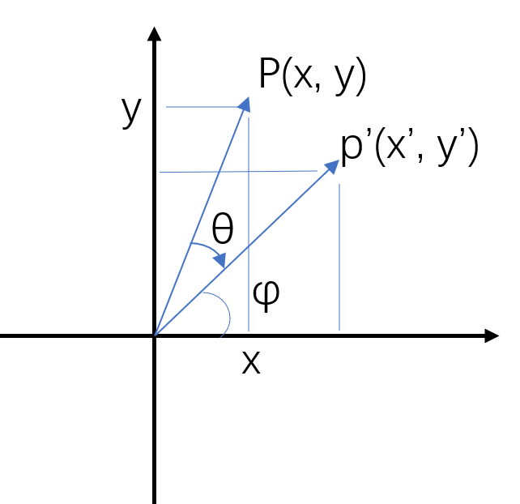
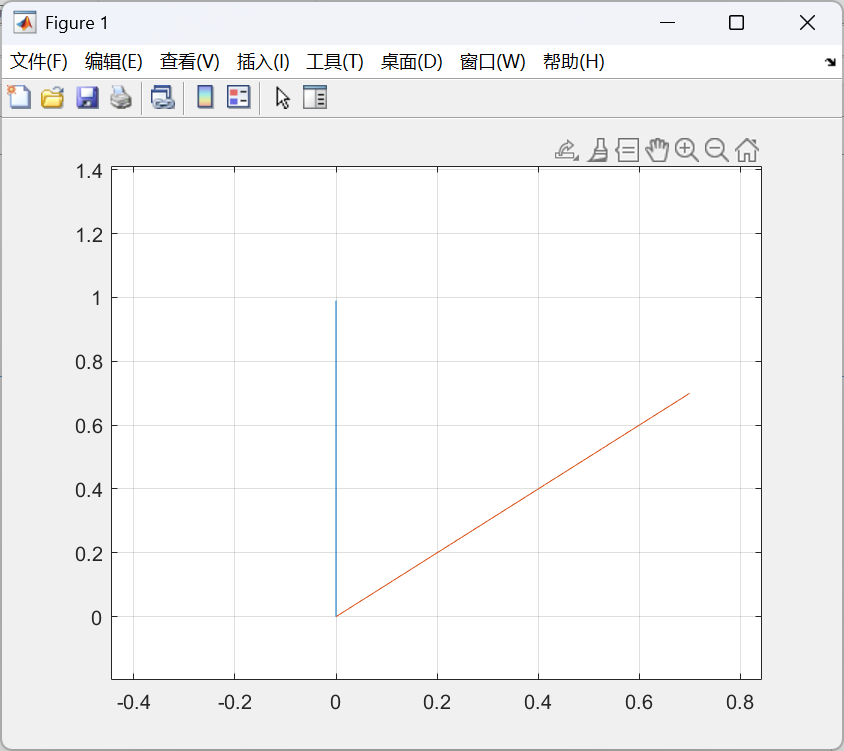
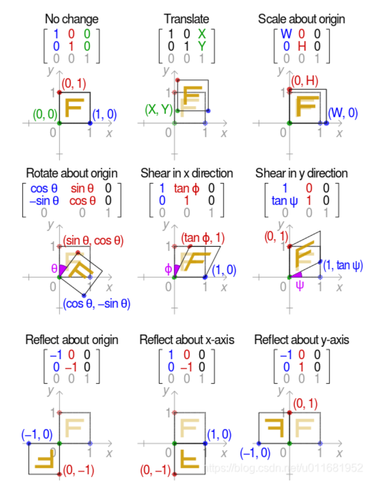

仿射变换
一般表达式：
展开后：
仿射变换包括了以下变换及其组合：
- 平移
- 旋转
- 反射
- 缩放
- 错切
1 平移变换
每个坐标都平移一定距离
所以
2 旋转变换
每个坐标绕着旋转中心旋转一定角度

原点位于左下角，p 顺时针旋转 $\theta$ 到了 p’
由图容易列出这五个方程：
求解得到：
所以变换矩阵应该为：
下列 matlab 代码展示了向量 (0, 1) 顺时针旋转 45°（蓝色->红色） 的过程：
1 | x = zeros(1, 100); |

这只是原点位于左下角，顺时针旋转的情况，而原点位于左上角、逆时针旋转等情况又有所不同，总结如下表
| 原点位置 | 旋转方向 | 旋转矩阵形式 |
|---|---|---|
| 左上角 | 顺时针 | $\begin{bmatrix} \cos(\theta) & \sin(\theta) \\ -\sin(\theta) & \cos(\theta) \end{bmatrix}$ |
| 左上角 | 逆时针 | $\begin{bmatrix} \cos(\theta) & -\sin(\theta) \\ \sin(\theta) & \cos(\theta) \end{bmatrix}$ |
| 左下角 | 顺时针 | $\begin{bmatrix} \cos(\theta) & -\sin(\theta) \\ \sin(\theta) & \cos(\theta) \end{bmatrix}$ |
| 左下角 | 逆时针 | $\begin{bmatrix} \cos(\theta) & \sin(\theta) \\ -\sin(\theta) & \cos(\theta) \end{bmatrix}$ |
可以看到，以左上角+顺时针旋转的情况为基准，原点位置和旋转方向改变时都要同时改变矩阵中所有 sin 的符号
3 反射变换
可以理解为分别关于x轴、y轴、原点对称
我们知道乘以一个单位阵不改变原向量
如果关于 x 轴对称，则对 y 取反：
同理，关于 y 轴对称，则对 x 取反：
关于原点对称，则对 x, y 都取反：
4 缩放变换
缩放就是给坐标乘个系数
所以：
5 错切变换
错切是沿着某个轴进行缩放
还是从单位阵出发进行改造：
水平错切是沿着 x 方向缩放，保持 y 坐标不变。因此 A 的第二行不用动，第一行需要加入个缩放因子 a：
垂直错切则是改变第二行：
6 总结
下面借一张 https://blog.csdn.net/u011681952/article/details/98942207 中的图总结一下仿射变换

但实际用的时候一般保留体现仿射变换性质的上面 2x3 部分作为仿射矩阵：
本博客所有文章除特别声明外，均采用 CC BY-NC-SA 4.0 许可协议。转载请注明来源 XHan！